Introducción a Mike Mentzer
Mike Mentzer fue un culturista profesional, filósofo del entrenamiento y escritor, conocido por revolucionar la forma en que los atletas enfocaban la intensidad y la recuperación en el entrenamiento de fuerza.
Nació en 1951 y desde joven mostró interés en la musculación. Inspirado por grandes figuras del culturismo y la biomecánica, comenzó a desarrollar su propio enfoque basado en la ciencia y la eficiencia.
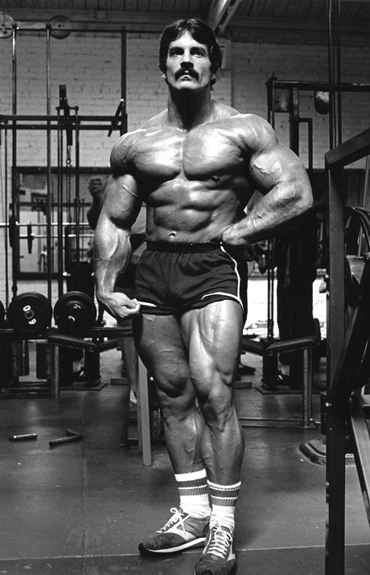
Logros en el culturismo
Entre sus logros más destacados, Mike Mentzer ganó el título de Mr. America 1976 con una puntuación perfecta, un hito inusual en la historia del culturismo. También compitió en Mr. Olympia 1980, un evento controversial donde terminó en quinto lugar, lo que lo llevó a retirarse de la competencia.
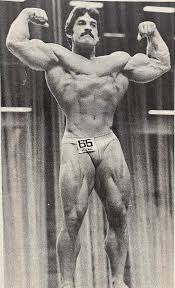
Su legado
Mentzer no solo fue un competidor, sino un pensador que cambió la forma en que los culturistas entrenaban. Su sistema Heavy Duty influyó en figuras icónicas como Dorian Yates, quien aplicó sus principios y dominó la era de los 90 en el culturismo profesional.
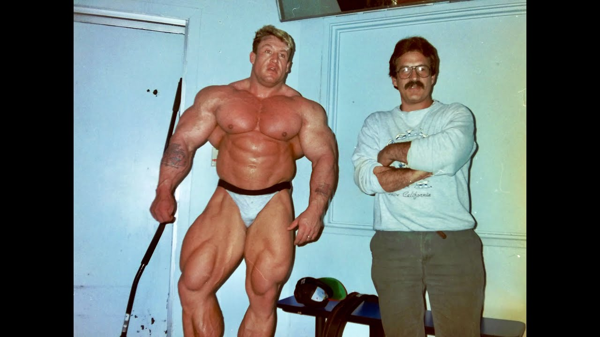
El Método Heavy Duty
El Heavy Duty es un sistema de entrenamiento basado en la intensidad máxima con el menor volumen posible. Fue desarrollado por Mike Mentzer con la premisa de que los músculos crecen cuando se les somete a un estímulo máximo y se les da el tiempo suficiente para recuperarse.
Principales pilares del Heavy Duty
- Alta intensidad: Cada serie debe realizarse hasta el fallo muscular absoluto.
- Pocas series: Solo una o dos series efectivas por ejercicio.
- Recuperación prolongada: Mayor tiempo de descanso entre sesiones para optimizar la supercompensación.
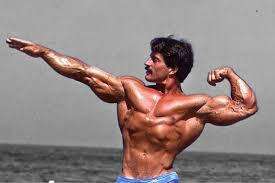
Evidencia científica del Heavy Duty
Si bien el Heavy Duty ha sido cuestionado por algunos entrenadores tradicionales, existen estudios que respaldan la efectividad del entrenamiento de alta intensidad y baja frecuencia para la ganancia muscular. Investigaciones han demostrado que entrenar al fallo activa una mayor cantidad de fibras musculares, lo que puede optimizar la hipertrofia.
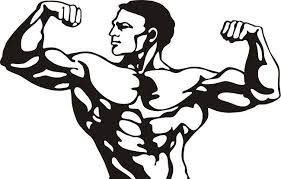
Ejemplo de rutina Heavy Duty
Una rutina típica de Heavy Duty se basa en realizar una serie efectiva por grupo muscular, asegurando que el esfuerzo sea máximo. Un ejemplo podría ser:
- Piernas: Sentadilla - 1 serie al fallo.
- Pecho: Press de banca - 1 serie al fallo.
- Espalda: Dominadas - 1 serie al fallo.
- Hombros: Press militar - 1 serie al fallo.
- Bíceps: Curl con barra - 1 serie al fallo.
- Tríceps: Fondos - 1 serie al fallo.
Esta rutina se realizaría solo 2 o 3 veces por semana para permitir una recuperación óptima.
Controversias y Críticas
Aunque el método Heavy Duty ha sido adoptado por muchos culturistas, también ha generado fuertes críticas y debates en la comunidad del fitness.
Críticas al método
- Riesgo de lesiones: Entrenar hasta el fallo en cada serie puede generar una alta tensión en músculos y articulaciones, aumentando el riesgo de lesiones.
- Frecuencia baja: Algunos entrenadores argumentan que entrenar solo 2-3 veces por semana no proporciona suficiente estímulo para el crecimiento muscular óptimo.
- No es adecuado para todos: Hay personas que no responden bien a un volumen de entrenamiento tan reducido y prefieren enfoques más convencionales.
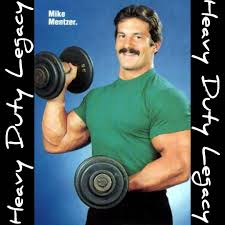
Debate sobre su efectividad
Existen estudios que comparan el Heavy Duty con entrenamientos de alto volumen, y aunque ambos pueden generar hipertrofia, la respuesta varía según la genética y adaptación del individuo.
Algunos entrenadores y culturistas han cuestionado la validez del Heavy Duty a largo plazo, mientras que otros, como Dorian Yates, han demostrado su éxito con este enfoque.
El declive de Mike Mentzer
A medida que Mentzer evolucionó su filosofía, comenzó a llevarla a extremos cada vez mayores. En sus últimos años, recomendaba entrenar con una frecuencia extremadamente baja, llegando a sugerir entrenamientos una vez cada 10 días.
Su obsesión con la reducción del volumen lo llevó a ser criticado incluso por algunos de sus seguidores originales, quienes consideraban que había ido demasiado lejos.
Además, Mentzer experimentó problemas personales y de salud, lo que afectó su carrera y su imagen pública en la última etapa de su vida.
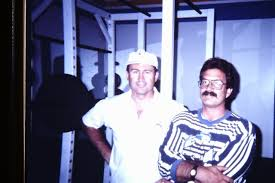
Recomendaciones para Implementar el Heavy Duty
Si bien el Heavy Duty ha demostrado ser efectivo para muchos atletas, su aplicación debe adaptarse a las necesidades individuales. Aquí algunas recomendaciones para su implementación.
¿Para quién es recomendable?
- Personas con experiencia previa en entrenamiento: Heavy Duty es un método intenso, ideal para quienes ya tienen base muscular.
- Buena conexión mente-músculo: Debido a la importancia de la ejecución controlada y el fallo muscular.
- No recomendado para principiantes absolutos: Puede ser difícil de aplicar sin una técnica adecuada.
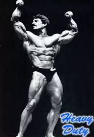
Modificaciones y ajustes
- Frecuencia: En lugar de entrenar una vez cada 10 días, hacerlo 2-3 veces por semana para estimular mejor los músculos.
- Volumen: Se pueden incluir 1-2 series adicionales en ciertos ejercicios sin comprometer la recuperación.
- Técnica: No siempre es necesario llegar al fallo absoluto; en ocasiones, detenerse una repetición antes puede reducir el desgaste excesivo.
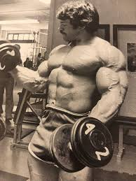
Ejemplo de rutina adaptada
Una versión más equilibrada del Heavy Duty podría verse así:
- Día 1 - Pecho y Espalda:
- Press de banca - 2 series al fallo
- Dominadas - 2 series al fallo
- Aperturas con mancuernas - 1 serie controlada
- Remo con barra - 2 series intensas
- Día 2 - Piernas:
- Sentadilla - 2 series al fallo
- Prensa de piernas - 2 series
- Extensiones de cuádriceps - 1 serie
- Femoral tumbado - 2 series
- Día 3 - Hombros y Brazos:
- Press militar - 2 series al fallo
- Elevaciones laterales - 1 serie controlada
- Curl con barra - 2 series
- Fondos para tríceps - 2 series
Esta rutina permite una intensidad alta sin comprometer la recuperación y sin llegar a los extremos que llevó Mike Mentzer.
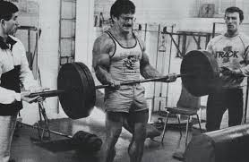
De Heavy Duty a Blood & Guts
Aunque el método Heavy Duty revolucionó el entrenamiento de alta intensidad, su evolución no se detuvo ahí. Dorian Yates, seis veces ganador del Mr. Olympia, tomó los principios de Mike Mentzer y los llevó aún más lejos con su enfoque Blood & Guts.
Este método mantiene la alta intensidad característica del Heavy Duty, pero incorpora un enfoque más refinado en la técnica, repeticiones forzadas y un plan estructurado para maximizar el crecimiento muscular. Si quieres conocer más sobre la evolución del entrenamiento de alta intensidad con Blood & Guts, sigue explorando.
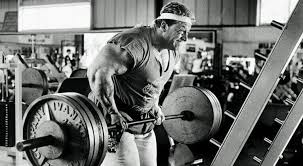